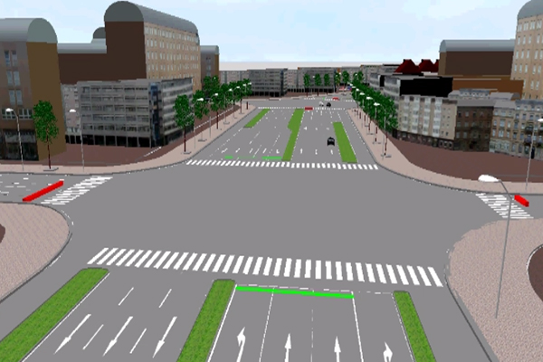
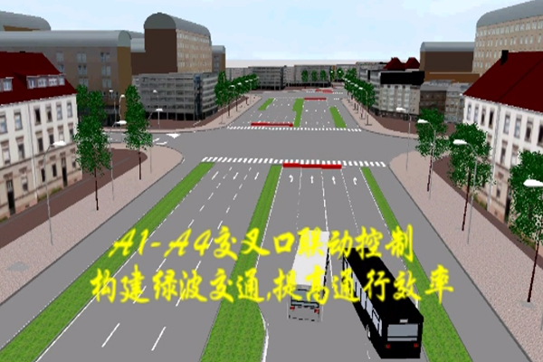
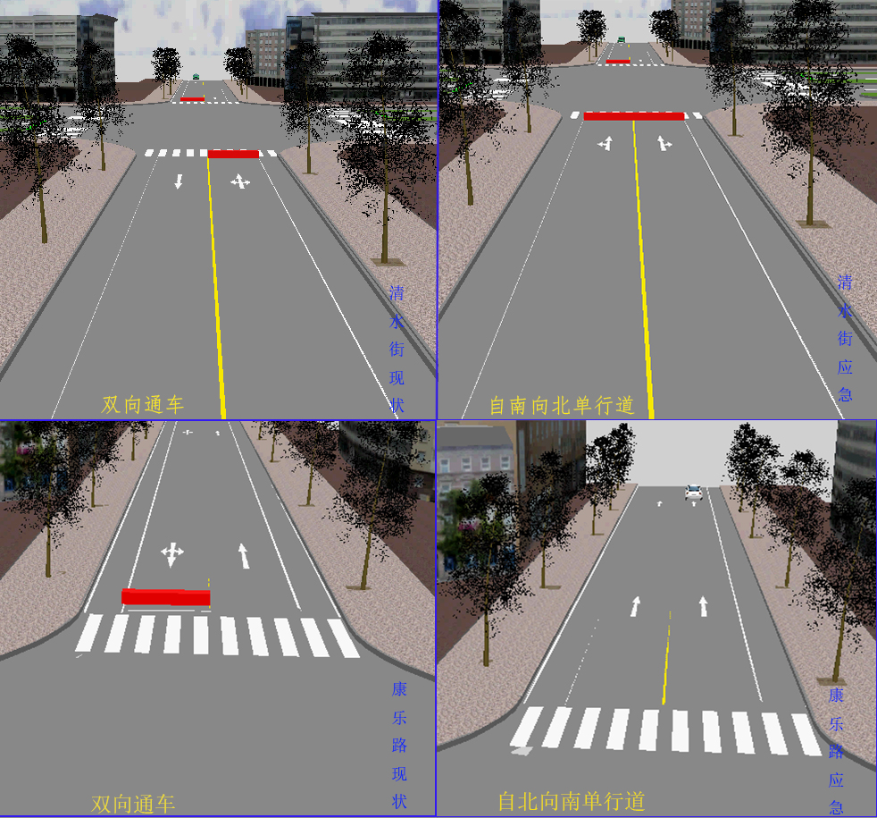
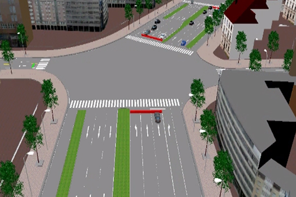
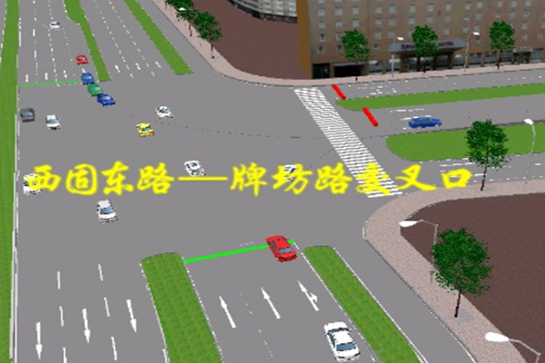
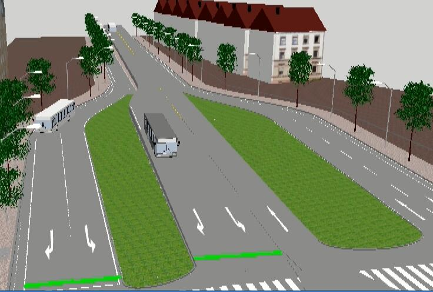
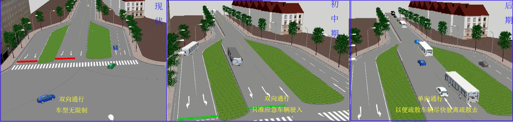

兰州石化公司有机厂
重点路段组织策略
编号
相关路段
交叉口现状
交叉口应急措施
路段现状
路段应急措施
管制时段
管制时段内是否调整方案
模拟视频
A3
西固西路
十字形交叉口，信号控制，东进口、西进口处展宽设专右车道，北进口道展宽并设左转车道
交叉口现状：

设置绿波带，联动控制，减少延误，增加主通行道的疏散通行能力
交叉口优化：

————
————
整个疏散期间
交叉口：无
仿真视频
康乐路
双向双车道，路侧有余宽，康乐路北段有中央分隔带。毗邻危险源，一旦发生事故，短时交通流输出剧增
将康乐路设成自北向南单行道
优化前后对比：

A4
合水路
X形交叉口，信号控制，各进口道都有展宽
交叉口现状：

————
————
西固中路
————
————
A7
牌坊路
T形交叉口，信号控制，各进口道有展宽，东进口道设左转待行区，整体占地面积大
交叉口现状：

牌坊路立交桥，双向两车道，是西固区重要的交通枢纽，北接西固东西路，南接福利东西福利东西路，且为了扩大通行能力，从北侧口东西两侧各扩出一个车道
牌坊路立交现状：

在疏散期间，可根据实际情况，设置可逆车道
需要调整。疏散前中期，自南向北驶入车道限制小汽车驶入；疏散后期，将南北车道设置成自北向南车道，以便疏散车辆及时驶出疏散区。
优化前后对比：

西固东路
————
————
交叉口和路段无需调整
A9
西固东路
Y形交叉口，信号控制，北进口道禁左，东进口道展宽出右转车道
————
————
环形东路
————
————
案例选择
兰州石化合成橡胶厂
兰州石化炼油厂
集结点交叉口
返回首页
Featured Posts
兰州石化公司有机厂，位于兰州市西固区清水街17号.
苯是一种石油化工基本原料，常温下是无色透明液体，有致癌毒性，挥发性.
苯易燃，遇明火或热源容易发生爆炸.